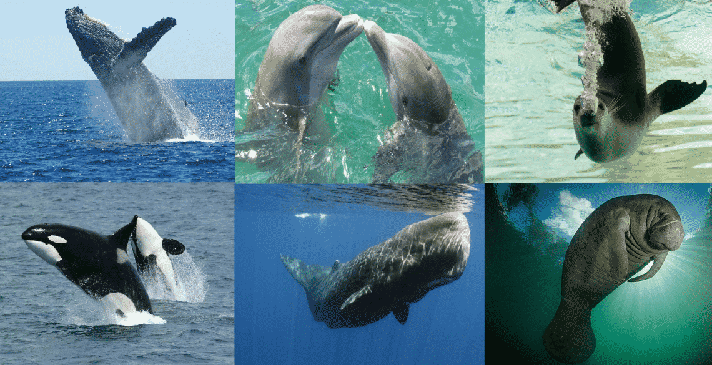
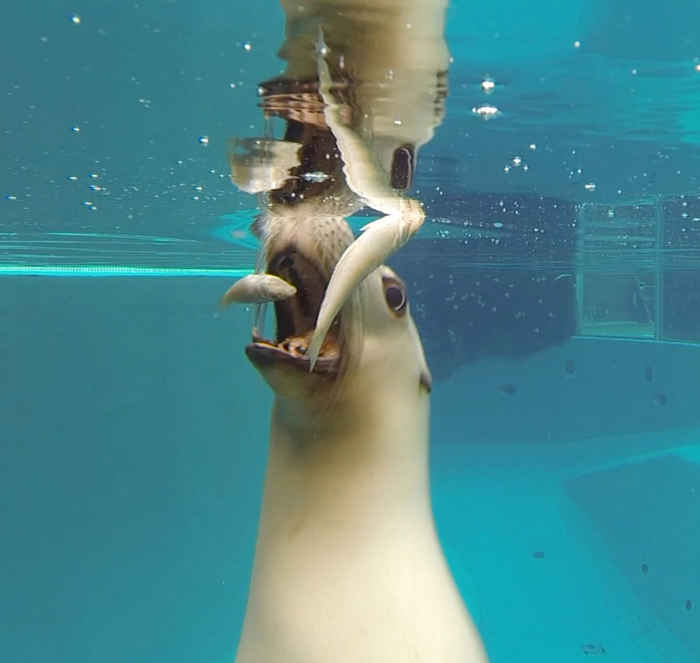

Los mamíferos (Mammalia, del latín mamma, "pecho materno, glándula mamaria") son una clase de animales vertebrados que tienen como característica principal la presencia de glándulas mamarias productoras de leche con las que alimentan a las crías y son los únicos animales actuales con pelo presente en casi todas las etapas de su vida en mayor o menor medida. Este grupo incluye a animales como las ballenas, los delfines, las focas, los leones marinos y los manatíes, entre otros.
Una de las características más notables de los mamíferos acuáticos
es su adaptación al medio acuático. Han desarrollado cuerpos
hidrodinámicos y extremidades modificadas que les permiten
desplazarse con eficiencia en el agua. Sus aletas y aletas traseras
les brindan propulsión y dirección, lo que les permite nadar
rápidamente y realizar movimientos ágiles bajo la superficie.

Los mamíferos acuáticos tienen la capacidad de respirar aire, lo que
significa que necesitan salir a la superficie para tomar oxígeno.
Algunos, como las ballenas y los delfines, tienen espiráculos o
aberturas en la parte superior de su cabeza que les permiten
respirar sin tener que sacar todo el cuerpo del agua. Otros, como
las focas y los leones marinos, deben salir completamente del agua
para respirar.
Estos animales también han desarrollado adaptaciones para sobrevivir en ambientes acuáticos fríos. Muchos mamíferos acuáticos tienen una capa gruesa de grasa que les proporciona aislamiento y ayuda a mantener una temperatura corporal constante en las aguas frías. Además, algunos tienen una densidad ósea reducida, lo que les permite ser más livianos y flotar con mayor facilidad.
 Los mamíferos acuáticos son en su mayoría carnívoros, alimentándose de peces, calamares y otros organismos marinos. Algunas especies, como los delfines, utilizan técnicas de caza en grupo para atrapar a sus presas, mientras que otras, como las ballenas, se alimentan filtrando grandes cantidades de agua y filtrando pequeños organismos a través de estructuras especializadas llamadas barbas.
En todos los mamíferos se presentan los sexos separados y la reproducción es de tipo vivípara (el embrión se desarrolla en el vientre de la hembra) en su mayoría. El periodo de gestación y el número de crías por camada varían mucho según los grupos. Normalmente, cuanto mayor es el tamaño del animal, más largo es el periodo de gestación y menor el número de crías.
La conservación de los mamíferos acuáticos es crucial debido a las amenazas que enfrentan, como la pérdida de hábitat, la contaminación, la caza y el cambio climático. Estas especies desempeñan un papel importante en los ecosistemas marinos, ayudando a regular las poblaciones de peces y otros organismos.